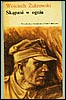
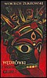
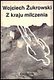
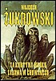

← Powrót do działu „Zdjęcia”
Galeria okładek książek
Archiwalna kolekcja okładek w nowym, spójnym układzie strony.
Ręka ojca
Pozycja 25 z 33
Ręka ojca
Pozycja 26 z 33

Skąpani w ogniu
Pozycja 27 z 33
Szczęściarz
Pozycja 28 z 33

Wędrówki z moim guru
Pozycja 29 z 33

Z kraju milczenia
Pozycja 30 z 33

Za kurtyną mroku
Pozycja 31 z 33
image32
Pozycja 32 z 33
Zsyp ze śmietnika pamięci
Pozycja 33 z 33